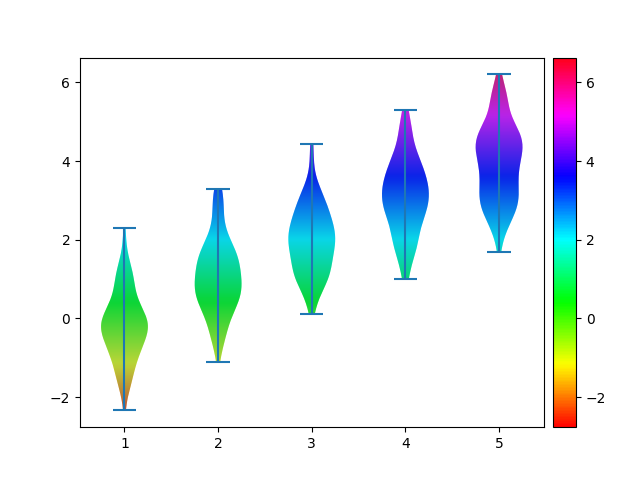

Note
Click here to download the full example code
10. mpl.violin with linear cmap
Make a violin plot with a linear colormap.
 9 import matplotlib
10 import numpy as np
11 import matplotlib.pyplot as plt
12 from matplotlib.path import Path
13 from matplotlib.patches import PathPatch
14 from mpl_toolkits.axes_grid1.axes_divider import make_axes_locatable
15
16
17 x = [np.random.normal(loc=i, scale=1, size=(100,)) for i in range(5)]
18
19 fig, ax = plt.subplots()
20 violins = ax.violinplot(x)
21
22 ymin, ymax = ax.get_ylim()
23 xmin, xmax = ax.get_xlim()
24
25 # create a numpy image to use as a gradient
26 Nx,Ny=1,1000
27 imgArr = np.tile(np.linspace(0,1,Ny), (Nx,1)).T
28 cmap = 'hsv'
29
30 for violin in violins['bodies']:
31 path = Path(violin.get_paths()[0].vertices)
32 patch = PathPatch(path, facecolor='none', edgecolor='none')
33 ax.add_patch(patch)
34 img = ax.imshow(imgArr, origin="lower", extent=[xmin,xmax,ymin,ymax], aspect="auto",
35 cmap=cmap,
36 clip_path=patch)
37
38 # colorbar
39 ax_divider = make_axes_locatable(ax)
40 cax = ax_divider.append_axes("right", size="5%", pad="2%")
41 norm = matplotlib.colors.Normalize(vmin=ymin, vmax=ymax)
42 cb = matplotlib.colorbar.ColorbarBase(cax, cmap=matplotlib.cm.get_cmap(cmap),
43 norm=norm,
44 orientation='vertical')
45
46 plt.show()
Total running time of the script: ( 0 minutes 0.244 seconds)